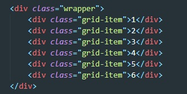
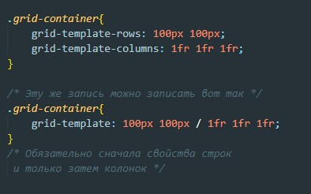

Рассмотрим вот такой пример
1fr - распределает ширины колонок таким образом что бы они равномерно заполнили все пространство грида
minmax(150px, 1fr) - при изменении экрана минимальная ширина колонки будет 150px максимальная 1fr. 1fr не может фигурировать в качестве минимальной единицы
repeat(3, 1fr) - эта запись говорит о том, что будет 3 колонки и у каждой будет ширина 1fr
есть еще вариант сокращенной записи.
Если использовать только свойства grid-row-start и grid-column-start то можно настроить своего рода порядок вывода нужного элемента сетки.
Так же для определения порадка вывода элемента сетки можно с помощью свойства order. Это свойство необходимо задавать кадому элементу сетки
justify-items - выравнивает элементы по ширине (это свойтсво задается родителю)
align-items - выравнивает элементы по высоте (это свойтсво задается родителю)
Значения для этих свойств:
stretch - растягиает элемент
start - прижимает элемент к началу сетки (либо по вертикали либо по горизонтали)
end - прижимает элемент к концу сетки (либо по вертикали либо по горизонтали)
Отдельно выравнивание можно переназначить каждому элементу сетки, для этого элементу необходимо задать свойство align-self и justify-self
Что бы расположить элемент по середине ячейки сетки необходимо элементу установить свойство margin: auto;
Для того что бы задать промежутки между элементами сетки используются такие свойства как row-gap и column-gap
fit-content - обрезает столбец под контент ячейки.
fit-content(300px) - говорит о том, что колонка будет обрезаться под контент ячейки, но как только ширина ячейки достигнет 300px рост ячейки остановится. То же самое применимо к строкам, хотя это не лучший вариант для строк.
Определяет заполнение grid контейнера элементами. по умолчанию стоит значение row (заполнение строкой). Можно указать значение column и тогда заполнение будет в колонку.